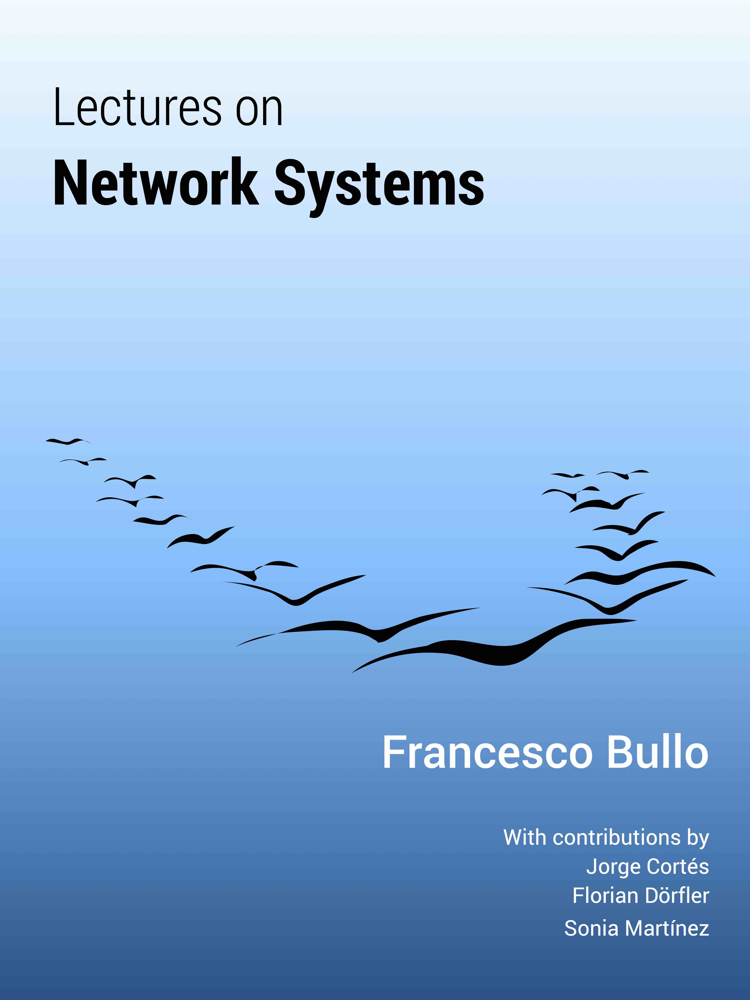

|  | Francesco BulloDepartment of Mechanical Engineering Edition 1.7, Apr 1, 2024 |
The book may be purchased or downloaded in the following versions:
printed paperback version [Amazon link], published by Kindle Direct Publishing (7inx10in, gray-scale, xii + 346 pages), ISBN 978-1-986425-64-3
tablet version [PDF file], optimized for viewing on tablets (3x4 aspect ratio, color), freely downloadable from the book website
three versions/documents meant for instructors and classroom teaching:
slide version [PDF file], that is, an abbreviated version suited for displaying on a classroom projector
classroom markup version [PDF file], that is, an abbreviated version (lettersize, with large sans-serif fonts, small margins), meant as markup copy for classroom teaching (i.e., print, mark, teach, discard)
a solution manual (PDF format) for instructors at accredited institutions planning to use this book for a course. The manual is freely available upon request (would you please let me know what course you plan to use the text for?).
Solution manual
I repeat: the solution manual is freely available upon request ONLY for instructors at accredited institutions and it is not intended to be shared broadly. If you are not an instructor at an accredited institution, please do not email me in the hope of receiving a copy.
Additionally, the following documents are downloadable:
Almost all book figures, available with a Creative Commons Attribution-ShareAlike 4.0 International License (CC BY-SA 4.0): [tgz file]
All bibliographical entries: [bibtex file]
UCSB lectures for the first 7 chapters: youtube playlist
A translation into Vietnamese by Trịnh Hoàng Minh and Đoàn Tuấn Kiệt (version 1.6, October 16, 2022; translation updated as of February 2023) is available here [PDF file].
@Book{FB-LNS,
author = {F. Bullo},
title = {Lectures on Network Systems},
year = 2024,
edition = {{1.7}},
publisher = {Kindle Direct Publishing},
ISBN = {978-1986425643},
url = {https://fbullo.github.io/lns},
}
An abbreviated version of the material in the first 10 chapters is available here: [PDF file]
The following Jupyter Notebooks in Python 3 contain numerous examples, visualization and supplements accompanying the lecture notes. The notebooks require a Python installation with the following required packages:
Python==3.8.11 numpy==1.20.3 matplotlib==3.4.2 networkx==2.6.3 scipy==1.7.1 sympy==1.6.2 ipykernel==6.4.1 ipython==7.27.0 ipython_genutils==0.2.0 ipywidgets==7.6.5 ipympl==0.7.0
The notebooks are also available on binders where they can be run without installing any software.
The notebooks were prepared by Erik Suer, while taking my UCSB course ME/ECE 269 “Network Systems”, during Fall 2021. They are released under the MIT License.
This book is intended for personal non-commercial use only: you may not use this material for commercial purposes and you may not copy and redistribute this material in any medium or format.
There are several reasons why I decided to self-publish this book via the print-on-demand service by Kindle Direct Publishing (former Amazon CreateSpace). I appreciate the ability to:
retain the full copyrights of all the material,
make the document freely available online in multiple versions (see above),
retain direct anytime control over the paperback publication costs, retain a majority of the royalties after low fix costs, and set a low price,
update the book revision at any time (simply re-upload the PDF file, minimal turn-around time, no need for any permission, and never out-of-print), and
make available a high-quality paperback book through a broad distribution network.
As a combination of this flexibility, I typically polish and enrich the book every time I teach the course.
Similar arguments are presented in the write-up Why I Self-Publish My Mathematics Texts With Amazon by Robert Ghrist
Jun 1, 2016: version .85 posted online
May 1, 2018: version 1, revision 1.0
Jan 1, 2019: version 1, revision 1.2: Since the first edition on May 1, 2018, I have corrected several typos and inconsistencies, redrawn a few figures, added assumptions missing in a few theorems, corrected an incomplete proof, added a few new exercises, removed an inaccurate exercise, and polished a few old exercises.
Jul 1, 2019: version 1, revision 1.3: new chapter on diffusively-coupled linear systems, polished Section 6.4, polished Section 7.1.1, rewritten Section 7.4, rewritten Section 5.1
Jul 1, 2020: version 1, revision 1.4: extensive revisions on examples in Chapter 1, sharper bounds and monotonicity properties of the spectral radius of non-negative matrices, various improvements in each of the first ten chapters.
Sep 1, 2021: version 1, revision 1.5: several typos and several new exercises.
Jan 1, 2022: version 1, revision 1.6: new sections on ergodicity coefficients, Metzler Hurwitz matrices, and interconnected stable systems. Numerous new exercises, additional; historical information, and new programming examples in python.
Apr 1, 2024: version 1, revision 1.7: new sections on balancing problems, several new exercises, several new solutions.
I am thankful for any feedback information, including suggestions, evaluations, error descriptions, or comments about teaching or research uses. Please email bullo at ucsb.edu